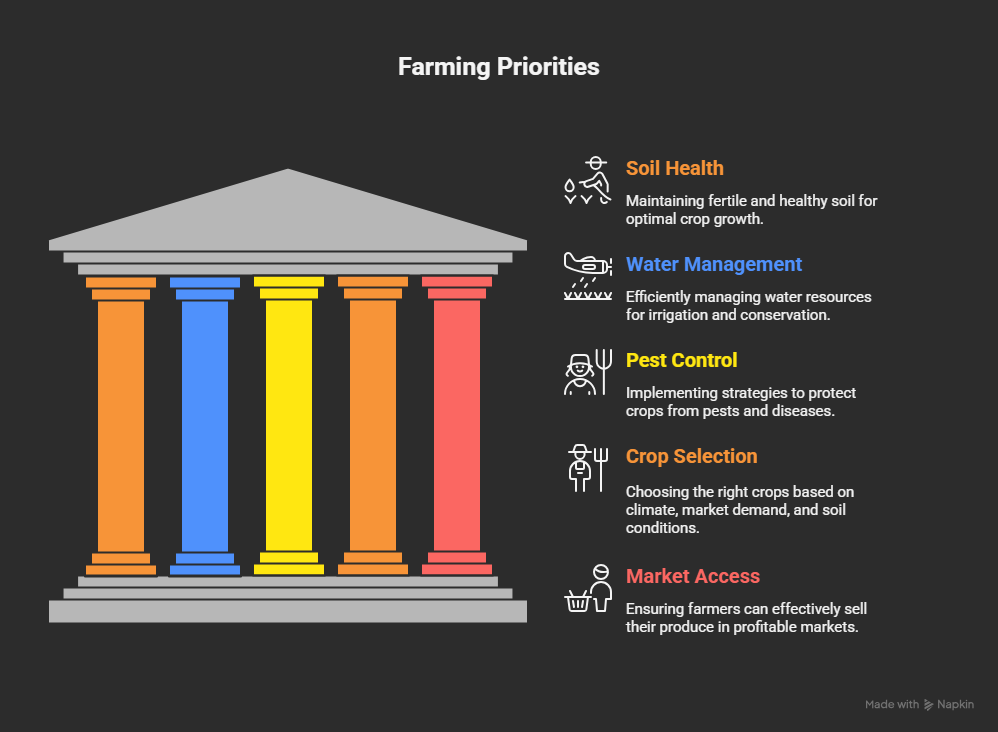

Digital krishi
Home Services Platform
From croping to production management and delivery to getting hand on money for farmer walefare management and production stratigies
Weather Forecast
**Prediction of atmospheric conditions (temperature, rain, wind). Forecasts are generated by supercomputers using.Numerical Models. Crucial for timing planting, harvesting, and field operations.
Irrigation
The artificial supply of water to land to assist in crop growth. Key systems include Drip Irrigation (highly efficient), Sprinklers, and surface flooding. Essential in areas with unreliable rainfall.
Crop Recommendation
The practice of advising farmers on the best crop to grow based on soil type, nutrient levels, weather history, and market demand. Increasingly relies on AI and Machine Learning analysis.
Smart Agriculture Tech
Use of modern tools like Drones, IoT Sensors (for soil and climate), and GPS-guided machinery (Precision Farming). Aims to optimize resource use and maximize yield with minimal waste.
Digital Krishi: Your Guide to Modern Farming
Success Stories from Digital Krishi Farmers
"The Crop Recommendation tool changed everything. I planted the recommended corn hybrid, and my yield increased by over 30%! Highly recommended."
"The real-time weather alerts saved my wheat harvest. I got a warning about unseasonal rain and harvested two days early. Digital Krishi is my lifeline."
"The irrigation scheduling feature, based on soil data, has cut my water use significantly. It's smart, efficient, and helps me conserve precious water resources."
"The Crop Recommendation tool changed everything. I planted the recommended corn hybrid, and my yield increased by over 30%! Highly recommended."